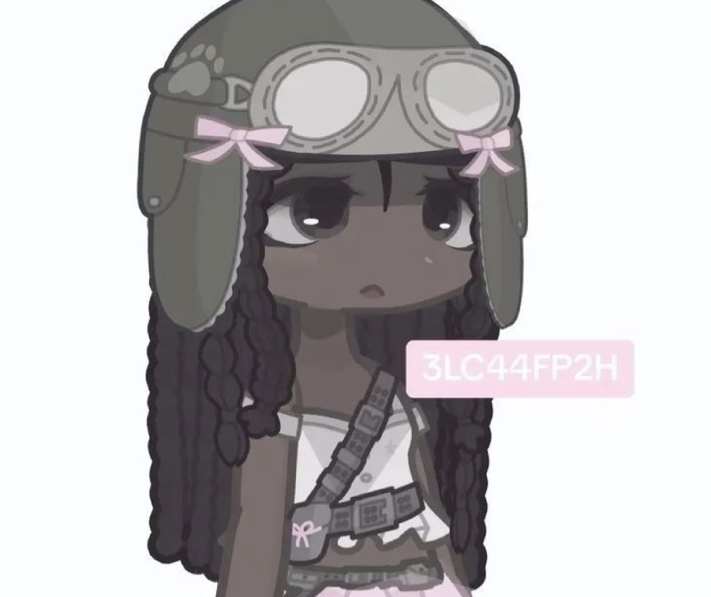

LUMIFY
A calm space for understanding your skin, made simple and supportive.

Design-forward portfolio focused on clarity, intent, and expressive systems.
A calm space for understanding your skin, made simple and supportive.

Reducing friction and guiding decisions through calm interaction.
A spatial, window-based interface exploring focus and intention.
Digital spaces should feel like extensions of thought — calm, intentional, and human.

I design quiet, intentional visual experiences that feel lived in.
I’m drawn to quiet details, emotional atmosphere, and spaces that feel human.
I pay attention to small interactions, subtle motion, and the way people move through digital environments.
I’m currently exploring immersive portfolios, interactive storytelling, and calm user experiences.
Currently studying design with a focus on UX, visual systems, and interaction — learning through both formal education and self-directed projects.
Figma · Illustrator · Photoshop · Premiere Pro · GitHub · AI tools · Design systems